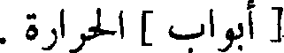
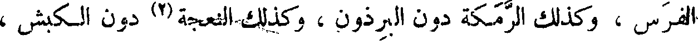
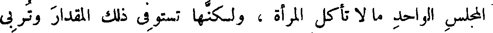
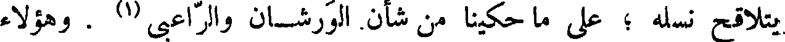
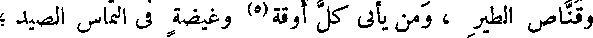

File: 000963.gt.txt (if the image is defective, simply delete all Arabic text and the line will be excluded)

النظر فى الكتب ، فلا يأتى عليه من الأيام مقدار الشغل بجمع الكتب ،
File: 000964.gt.txt (if the image is defective, simply delete all Arabic text and the line will be excluded)

والاختلاف فى سماع العلم ، إلا وقد بلغ بالكفاية وغاية الحاجة . وإنما تفسد
File: 000965.gt.txt (if the image is defective, simply delete all Arabic text and the line will be excluded)

الكفاية من [ له ](3) تمت آلاته(4) ، وتوافت إليه أسبابه ، فأما الحدث
File: 000966.gt.txt (if the image is defective, simply delete all Arabic text and the line will be excluded)
الغرير ، والمنقوص الفقير ، فخير مواريثه الكفاية إلى أن يبلغ التمام ، ويكمل
File: 000967.gt.txt (if the image is defective, simply delete all Arabic text and the line will be excluded)

للطلب . فخير ميراث ورث كتب وعلم ، وخير المورثين من أورث ما يجمع
File: 000968.gt.txt (if the image is defective, simply delete all Arabic text and the line will be excluded)

ولا يفرق ، ويبصر ولا يعمى ، ويعطى ولا يأخذ ، ويجود بالكل دون
File: 000969.gt.txt (if the image is defective, simply delete all Arabic text and the line will be excluded)

البعض ، ويدع لك الكنز الذى ليس للسلطان فيه حق ، والركاز (5) الذى
File: 000970.gt.txt (if the image is defective, simply delete all Arabic text and the line will be excluded)

ليس للفقراء فيه نصيب ، والنعمة التى ليس للحاسد فيها حيلة ، ولا للصوص
File: 000971.gt.txt (if the image is defective, simply delete all Arabic text and the line will be excluded)

فيها رغبة ، وليس للخصم عليك فيه حجة ، ولا على الجار فيه مئونة .
File: 000973.gt.txt (if the image is defective, simply delete all Arabic text and the line will be excluded)

وأما ديمقراط فإنه قال : ينبغى أن يعرف أنه لا بد من أن يكون لكل
File: 000974.gt.txt (if the image is defective, simply delete all Arabic text and the line will be excluded)

كتاب علم وضعه أحد من الحكماء ، ثمانية أوجه : منها الهمة ، والمنفعة ،
File: 000975.gt.txt (if the image is defective, simply delete all Arabic text and the line will be excluded)

والنسبة ، والصحة ، والصنف ، والتأليف ، والإسناد ، والتدبير ، فأولها أن
File: 000976.gt.txt (if the image is defective, simply delete all Arabic text and the line will be excluded)

الاستمراء ، لأن الشهوة من أمتن (1) أبواب الاستمراء ، والحركة من أعظم
File: 000977.gt.txt (if the image is defective, simply delete all Arabic text and the line will be excluded)

[ أبواب ] الحرارة .
File: 000979.gt.txt (if the image is defective, simply delete all Arabic text and the line will be excluded)

ودوام الأكل فى الإناث أعم منه في الذكور ، وكذلك الحجر دون
File: 000980.gt.txt (if the image is defective, simply delete all Arabic text and the line will be excluded)

الفرس ، وكذلك الرمكة دون البرذون ، وكذلك النعجة (2) دون الكبش ،
File: 000981.gt.txt (if the image is defective, simply delete all Arabic text and the line will be excluded)

وكذلك النساء فى البيوت دون الرجال . وما أشك أن الرجل يأكل فى
File: 000982.gt.txt (if the image is defective, simply delete all Arabic text and the line will be excluded)

المجلس الواحد ما لا تأكل المرأة ، ولكنها تستوفى ذلك المقدار وتربى
File: 000983.gt.txt (if the image is defective, simply delete all Arabic text and the line will be excluded)

عليه مقطعا غير منظوم ، وهى بدوام ذلك منها ، يكون حاصل طعامها
File: 000984.gt.txt (if the image is defective, simply delete all Arabic text and the line will be excluded)

أكثر . وهن يناسبن الصبيان في هذا الوجه ، لأن طبع الصبى سريع
File: 000985.gt.txt (if the image is defective, simply delete all Arabic text and the line will be excluded)
الهضم ، سريع الكلب ، قصير مدة الأكل ، قليل مقدار الطعم ،
File: 000986.gt.txt (if the image is defective, simply delete all Arabic text and the line will be excluded)

فللمرأة كثرة معاودتها ، ثم تبين بكثرة مقدار المأكول . فيصير للخصى
File: 000987.gt.txt (if the image is defective, simply delete all Arabic text and the line will be excluded)

نصيبان : نصيبه من شبه النساء ، ثم اجتماع قوى شهوتيه في باب واحد ،
File: 000988.gt.txt (if the image is defective, simply delete all Arabic text and the line will be excluded)

أعنى شهوة المنكح التى تحولت ، وشهوة المطعم .
File: 000989.gt.txt (if the image is defective, simply delete all Arabic text and the line will be excluded)

قال ، وقيل لبعض الأعراب : أى شيء آكل ؟ قال : برذونة
File: 000990.gt.txt (if the image is defective, simply delete all Arabic text and the line will be excluded)

رغوث (3) .
File: 000991.gt.txt (if the image is defective, simply delete all Arabic text and the line will be excluded)

ولشدة نهم الإناث ، صارت اللبؤة أشد عراما وأنزق ، إذا طلبت
File: 000992.gt.txt (if the image is defective, simply delete all Arabic text and the line will be excluded)

الإنسان لتأكله ، وكذلك (4) صارت إناث الأجناس الصائدة [ أصيد ] ،
File: 000993.gt.txt (if the image is defective, simply delete all Arabic text and the line will be excluded)

من النتاج الذى ركبوا ؛ وزعموا أن ذلك مشهور فى بلاد الحبشة ؛ وأقاصى
File: 000994.gt.txt (if the image is defective, simply delete all Arabic text and the line will be excluded)

اليمن . وقال آخرون : ليس كل خلق مركب لا ينسل ولا يبقى نجله ولا
File: 000995.gt.txt (if the image is defective, simply delete all Arabic text and the line will be excluded)

يتلاقح نسله ؛ على ما حكينا من شأن. الورشان والراعبى (1) . وهؤلاء
File: 000996.gt.txt (if the image is defective, simply delete all Arabic text and the line will be excluded)

وما أشبههم يفسدون العلم ، ويتهمون الكتب ، وتغرهم كثرة أتباعهم ممن
File: 000997.gt.txt (if the image is defective, simply delete all Arabic text and the line will be excluded)

تجده مستهترا بسماع الغريب ، ومغرما بالطرائف والبدائع . ولو أعطوا مع
File: 000998.gt.txt (if the image is defective, simply delete all Arabic text and the line will be excluded)

هذا الاستهتار (2) نصيبا من التثبت ، وحظا من التوقى ؛ لسلمت الكتب
File: 000999.gt.txt (if the image is defective, simply delete all Arabic text and the line will be excluded)

( النتاج المركب فى الطيور )
File: 001000.gt.txt (if the image is defective, simply delete all Arabic text and the line will be excluded)

من كثير من الفساد .
File: 001001.gt.txt (if the image is defective, simply delete all Arabic text and the line will be excluded)

وأنا رأيت طائرا له صوت غير حسن ؛ فقال لي صاحب الطيور : إنه
File: 001002.gt.txt (if the image is defective, simply delete all Arabic text and the line will be excluded)

من نتاج ما بين القمرى(3) والفاختة(4) .
File: 001003.gt.txt (if the image is defective, simply delete all Arabic text and the line will be excluded)

وقناص الطير ، ومن يأىي كل أوقة(5) وغيضة فى التماس الصيد ؛
File: 001004.gt.txt (if the image is defective, simply delete all Arabic text and the line will be excluded)

يزعمون أن أجناسا من الطير الأوابد والقواطع ، تلتقي على المياه فتتسافد ؛
File: 001005.gt.txt (if the image is defective, simply delete all Arabic text and the line will be excluded)

وأنهم لا يزالون يرون أشكالا لم يروها قط ؛ فيقدرون أنها من تلاقح
File: 001006.gt.txt (if the image is defective, simply delete all Arabic text and the line will be excluded)

تلك المختلفة .